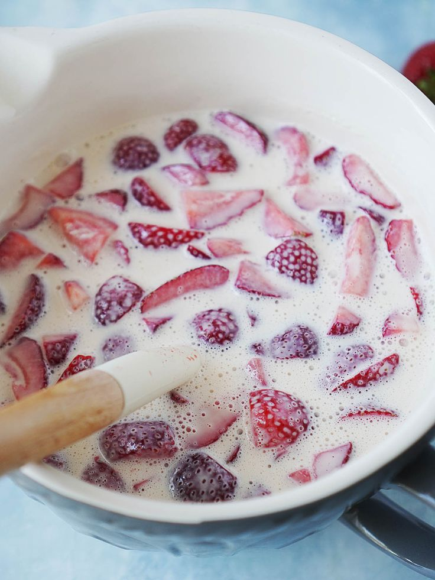

Mi Blog Culinario Maris
Inicio
Recetas
Categorías
Sobre mí
Newsletter
Contacto
🌙

Ingredientes
1 taza de fresas
1/2 taza de crema o yogur
2 cucharadas de leche condensada o azúcar
Preparación
Lava y corta las fresas.
Mezcla la crema con leche condensada o azúcar.
Agrega las fresas y disfruta (o haz un licuado).